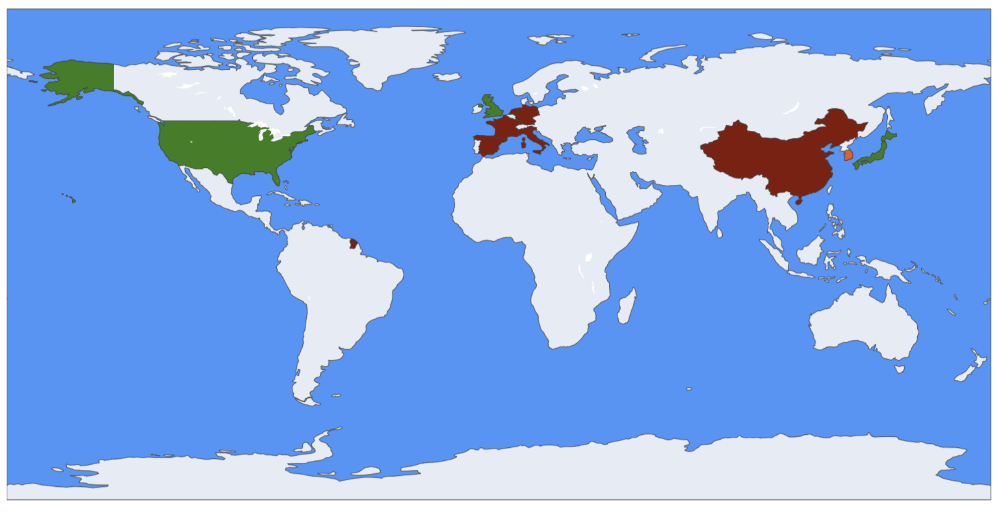

Actions du législateur
Objectifs intrinsèques de la régulation
Au cœur de la régulation de l'IA réside l’objectif de protéger les citoyens, garantir la sécurité, préserver les droits fondamentaux, assurer la transparence des décisions algorithmiques, et prévenir les dérives (biométrie, surveillance de masse, biais discriminatoires) (bakom.admin.ch).
-
Anglosphère (US, UK, Canada, Australie) : les législateurs adoptent un cadre pragmatique et fédérale (US Executive Orders, Data Use & Access Act 2025 au Royaume‑Uni (Norton Rose Fulbright)), visant à protéger la vie privée et prévenir les discriminations tout en stimulant l’innovation.
-
Europe continentale : AI Act en vigueur depuis août 2024, fixe un cadre strict (interdictions de surveillance biométrique, obligation de transparence, audits, sanctions pouvant atteindre 7 % du chiffre d’affaires) (xenoss.io, Digital Strategy EU). Une feuille de route claire : protéger les droits et favoriser la confiance citoyenne.
-
Asie émergente : La Chine impose un régime autoritaire (inscription obligatoire, labellisation, contrôles de contenus (Future of Privacy Forum)), la Corée du Sud déploie une loi nationale cadre applicable dès 2026 , le Japon suit une voie prudente, éthique et volontaire .
Intensité des cadres régulateurs IA par pays (2024–2025)

Analyse des réglementations clés
Anglosphère (US, UK, Canada, Australie)
Régulation fragmentée, grands risques identifiés
-
Les préoccupations majeures concernent la vie privée, les biais algorithmiques, les deepfakes et le risque systémique, dans un contexte d'absence de cadre fédéral harmonisé.
→ En 2025, plus de 550 projets de loi ont été proposés aux États-Unis, chacun ciblant ces risques de manière isolée (Inside Global Tech, Financial Times). -
Les deepfakes représentent une menace croissante : 80 % des fraudes liées à l’IA en 2023 les ont utilisés.
-
L’absence d’un cadre uniforme crée un vide réglementaire : incohérences entre États, insécurité juridique, et risques réputationnels pour les entreprises.
Europe continentale
Régulation centralisée et priorisation des droits fondamentaux
-
L’AI Act (en vigueur depuis août 2024) définit un cadre rigoureux :
- Interdiction des systèmes à « risque inacceptable » (biométrie, scoring social…).
- Obligations renforcées pour les usages à haut risque (santé, éducation, recrutement…).
- Auditabilité, transparence, et amendes jusqu’à 7 % du chiffre d’affaires global (xenoss.io).
-
L’UE privilégie la sécurité juridique et l’équité pour les consommateurs, via des organes comme l’EIOPA (assurance) ou l’EDPB (données personnelles).
-
Objectif : favoriser une innovation responsable dans un cadre protecteur.
Asie émergente (Chine, Corée, Japon…)
Approche variée : de l’autoritaire au progressif
-
Chine :
- Contrôle très strict : enregistrement des modèles, filtrage des contenus, étiquetage obligatoire des deepfakes, audits préalables.
- Objectif : souveraineté technologique et sécurité idéologique (arXiv).
-
Corée du Sud :
- AI Framework Act adopté en janvier 2025, effectif en 2026.
- Approche « risk-based » ciblant les domaines critiques (énergie, santé, éducation…) (Future of Privacy Forum).
-
Japon :
- Stratégie basée sur l’éthique, par lignes directrices sectorielles volontaires.
- Accent sur la fiabilité technique, la protection des données, avec des labels étatiques.
Priorités réglementaires par zones
Ce panorama met en évidence une fragmentation géopolitique des approches réglementaires :
| Zone géographique | Approche dominante | Objectifs principaux |
|---|---|---|
| Europe | Régulation centralisée | Droits fondamentaux, transparence, contrôle a priori |
| Anglosphère | Régulation fragmentée | Cyberrisques, deepfakes, responsabilité algorithmique |
| Chine | Contrôle étatique autoritaire | Souveraineté, sécurité idéologique |
| Corée du Sud | Régulation ciblée par secteur | Innovation encadrée, sécurité nationale |
| Japon | Soft law & éthique | Confiance, autorégulation, fiabilité technique |
Cette diversité de philosophies réglementaires génère une tension croissante entre : - Liberté d’innovation - Efficacité des contrôles - Protection des droits